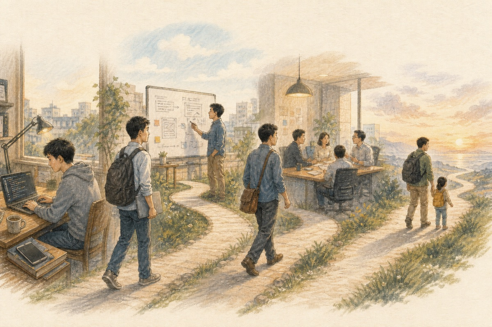
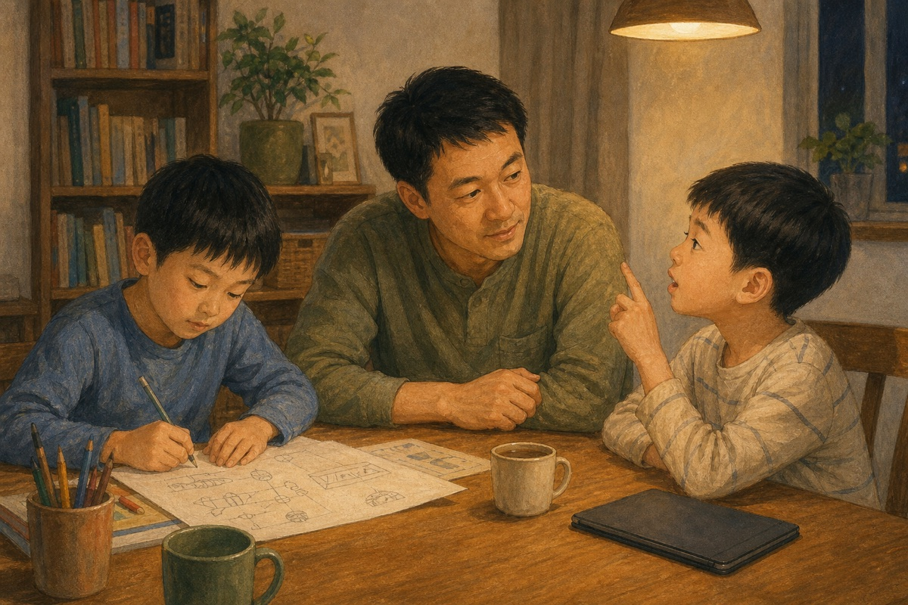

今天是 Last Day。这一天，还是来了——在我 37 岁的时候。
我一毕业就加入这里，到今天为止，整整 14 年。这 14 年里，我从一个应届毕业生，变成了一个有两个儿子的中年爸爸。
14 / 37 = 37.8%
人生将近四成的时间，留在了这里。
感谢公司一路以来的支持，让我从一个刚步入社会的小白，先后经历了安卓客户端开发、前端开发、全栈工程师、产品经理，再到 To B 产品经理的过程。
这些年，我做过旅行业务、电商业务、金融业务和支付业务，最后来到 To B 的企业服务赛道，做过智能硬件、低代码、商业化和运营增长。
蓦然回首，今天已经是我的 Last Day。在去公司之前，我简短录下一段音频，权作一个 mark，记录这 14 年来的点点滴滴。
今天不展开讲太多，只说说此刻脑子里想得最多的三件事。在这个年纪、这个档口，它们和我刚毕业时相比，已经有了很大的变化。

01
世界远不止一条路
可以通往你的终点
眼界还是需要不断拓宽——拓宽你的知识，拓宽你的眼界，拓宽你的胸怀，也拓宽你的心境。
人不应该反着来。如果心境、眼界和知识没有随着年龄一起增长，反而只盯着眼前的压力，或者只是被动地接受输入，那么过了 30 岁、35 岁，各自都会出现一些困惑与焦虑。
02
关于职业本身
我有了新的理解
我们工作的最终目的，不只是在一家公司获得怎样的职位或评价。更重要的是，在具备基础的物质条件、完成相关能力积累后，如何走进下一个阶段——对很多人来说，大概是在毕业三年以后。
到了这个阶段，就不能再只是机械地执行任务。职业初期，机械式执行当然可以；但当你真正负责一块业务，有了自己独立的理解之后，你的每一次代码提交、每一次业务与产品需求的优先级判断、每一次执行路径的选择，其实都代表着你对这件事的理解和思考。
每个人都有压力。但如何形成自己的认识、活出自己的观点，每个人都不一样。你的工作、产品和收入，归根到底都不真正属于你；只有你内心平静时的那些认识和想法，那份心境，才是你真正能够控制的。
我非常感谢曾经参与过的业务，也感谢所有与我共事的同事。是他们让我明白，很多时候，事物都有自身的规律和周期。
如果从自我生存、价值交换的角度看，要想持续获得回报，就必须找到自己的差异化价值。而这种差异化，需要给对方带来增量价值，或者超出平均水平的价值。只有这样，你提供的服务才会更有生命力。
要做到这一点，就需要采取不一样的方式。这些独特的方式，来自平时的逆向思维；而逆向思维，又来自不同于惯常的思考视角：
1. 既要站在不一样的视角，更要站在本质的“第一性原理”视角；
2. 站在同理心的视角；
3. 站在更大 context（上下文）维度输入的视角。
通过这些视角去发现机会、定义问题，进而提供解决方案。
这对我来说，是最近几年很大的一个收获。如果能想到“功成不必在我”，慢慢放下自己的自大、自诩重要，以及自以为厉害的傲慢，我们就能拥有一个更广阔的思想平台。
03
AI 时代
我们该如何理解孩子的教育
我非常感谢媳妇儿给我生了两个大儿子，也感谢母校西安邮电大学的老师，以及工作中遇到的各位同事。正是因为大家，才让我这个初高中学习都很一般的普通男孩，参与到了这个时代的红利中。
刚毕业、最年轻有活力的时候，我踏上了互联网的大巴车；三十而立时，深度参与了移动互联网的兴起与成熟；快到四十不惑的年纪，又赶上了 AI 时代的启蒙。
在 To B 这个赛道，我应该还是会继续做下去。今天先不讲企业 AI，只谈谈在 AI 时代，我对孩子教育的一点简单理解。
一个最直观的感受是，在目前的招聘市场中，如果和 AI 完全无关，高端岗位正在明显减少。大厂的主力岗位招聘方向，也在越来越全面地转向 AI。
这种变化正在不断传导：
01 先发生在头部科技互联网公司；
02 未来会传导到一般性的民营企业；
03 再通过这些企业连接并渗透到各个行业。
每一个行业作为社会的生产者，最终都要向消费者输出产品和商品。而消费者也在分层。如今最能接受 AI 这种新鲜事物的，往往是更年轻的一代。
他们是在 AI 原生环境里成长起来的：有天天用“豆包”的小学生，有在大学里使用各种生成式智能体方案的学生，也有刚刚入职的年轻白领。
所有这些变化都在滚动发生。一边是企业招聘方向的扭转，另一边，回到具体的孩子身上，我们也能看到他们现在的学习压力确实非常大。
今年，浙江高考 600 分以上的考生超过 5 万人，高分段的竞争越来越激烈。孩子们现在的刷题方式和我们以前上学时差别并不大，但题目确实越来越难，也越来越要求他们具备不同的思维方式。这就是当前的大趋势。
作为父母，回到自己的孩子身上，我常常在想：我们能给他们最大的帮助和托举，其实来自父母对职业、社会、工作和人生的独立思考。这些经验很重要。如果条件允许，爸爸妈妈能把自己的感受和感悟“蒸馏”出来，再提供给孩子，带来的帮助可能会更大。

现在，很多孩子因为上各种培训班，时间像“牛马”一样被大量、结构化地切分，每天都在学习很多东西。很多时候，家长忽略了：孩子的自我调节能力、情绪控制能力和整个生理机制，并没有像成年人一样发育完整。
这也让越来越多的孩子出现焦虑、厌学，甚至走向极端，发生一些令人遗憾的事故。有些故事，甚至没有进入公共视野。
很推荐大家看一看电视剧《小舍得》。里面的一些冲突虽然被放大了，但很多情节，在现实家庭和孩子的教育中都能找到影子。希望这件事能引起我们的重视。
人生的路很长，但也是在无常中走向结束。不要留下太多遗憾，更不要有太多执着。
有规划，但不为过远的规划焦虑；回忆过去，但不困在无法改变的过去。认真过好今天，也允许未来保留它的不确定。
我们应该专注于每一个当下。过好今天，也可以思考未来，但不要被未来的不确定性困住。你可以回忆过去，因为那是看见曾经生活的美好；但不要再为已经发生、又无法改变的事情反复焦虑和懊悔。否则，就很难真正走出来。
在“四十不惑”的年纪，一定是先有“惑”，先经历困惑，然后才走向“不惑”。再后来，是从容地面对疑惑，也放下对“不惑”的执着。
也许只有这样，我们才能进入一个更平和的生命状态——既往不恋，不困于过去，也不忧惧未来，以平和的心态，一起走向这个正在到来的 AI 新时代。
再见了，BABA。
也是时候，再出发了。